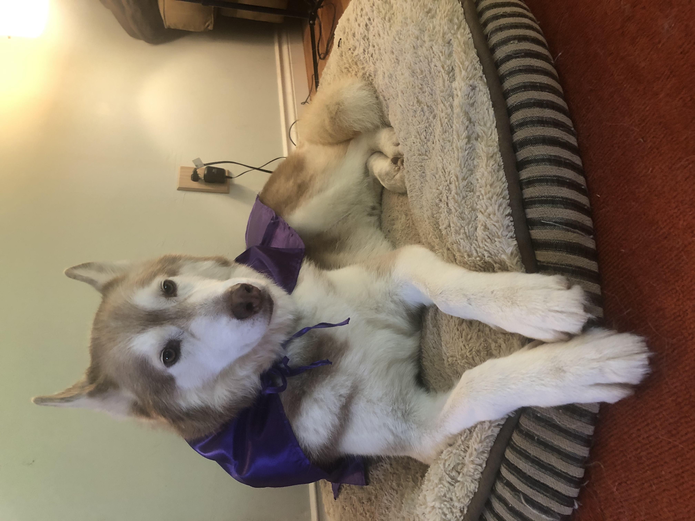
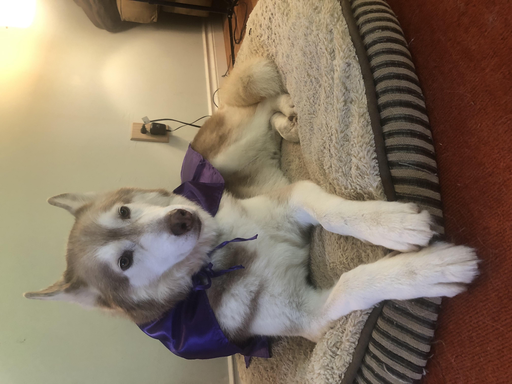

Meet Karlo

We call him Karl for short. He's an 11-year-old Siberian Husky-Malamute Mix (we think), but underneath the double-coat of fur, he is clearly human. But no need to take my word for it. You can see the evidence for yourself.

We call him Karl for short. He's an 11-year-old Siberian Husky-Malamute Mix (we think), but underneath the double-coat of fur, he is clearly human. But no need to take my word for it. You can see the evidence for yourself.
He requires a pillow at all times, regardless of quality, shape or intended purpose. He will use anything.


He often gets lost in deep thought. At night he sits outside and stares for hours, and there are times when he seems to be asking, "What is the purpose of life?".


He's choosy with his friends. He's mostly indifferent to other dogs, but he has had some BFFs in his life, too.


He has hands. He points to important things like his food bowl or the back door, and he also holds objects like mail and tiny tennis balls.


He is a dainty eater and hates to touch anything besides food with his mouth. When he takes treats, he will use his front teeth to gently take it from your hand without touching you. He will eat a single grain of rice this way.


He understands his best camera angles. This dog knows where the camera is and then make sure the photographer gets several of his angles. He is a versatile model who fits in at the most glam locations such as in a river or on the top of a cliff overlooking the ocean.


He has dolls. He destroys toys that look like prey, but when given a toy that looks like a human, he will cherish it forever like a baby doll.


He looks good in hats, sunglasses, even capes!


 



He can drive. Typically he prefers to be a backseat driver but sometimes he'll get in the driver's seat for a spin.


He is a talented singer with a wide range. He is a member of the reknowned National Ambulance Chorus, and sings along with church bells or any other human who has figured out how to howl properly.